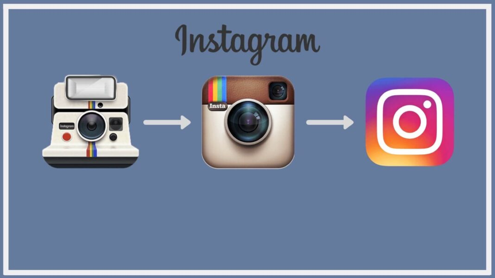
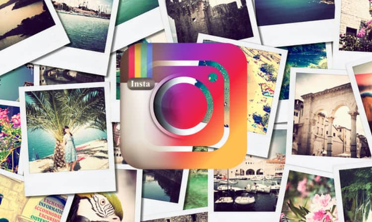
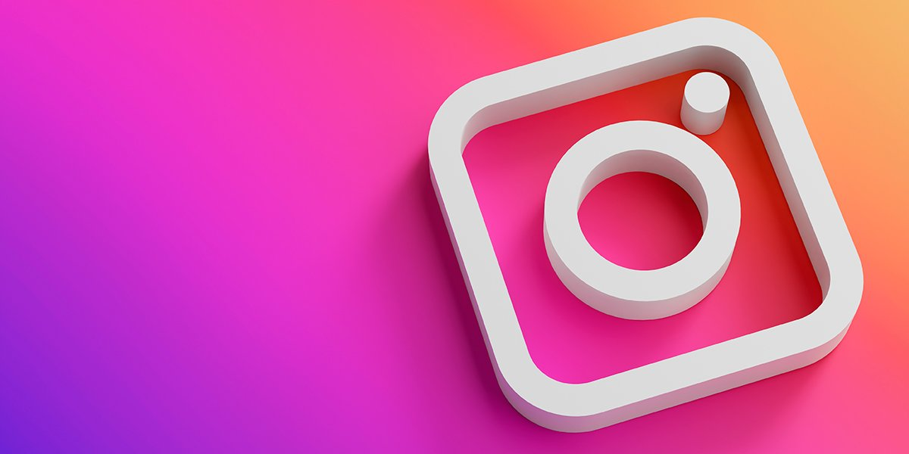

| Historia |
- Fue lanzado en 2010 por el norteamericano Kevin Systrom y el brasileño Mike Krieger,
ambos ingenieros de software. El mismo día del lanzamiento,
la aplicación se convirtió en la aplicación más descargada en Apple Store y,
en diciembre del mismo año, tenía 1 millón de usuarios.
|

|
| Instagram llega a Android y es comprada por Facebook |
- De esta forma, en abril de 2012, Instagram apareció por fin para Android consiguiendo
más de 1 millón de descargas en menos de 24 horas.
Tras este lanzamiento, la aplicación llamó la atención de Mark Zuckerberg, creador de Facebook,
que tan sólo 6 días después de la llegada de la app a Android la compró por 1.000 millones de dólares.
|

|
| Instagram se renueva, llegan las stories y los anuncios |
- Con la compra por parte de Facebook, empezaron a llegar las mejoras:
se podía etiquetar a personas en las fotos y aparecieron los mensajes directos con fotografías o vídeos.
En un principio, estos cambios fueron mínimos, ya que la aplicación contaba con un
estilo e identidad propios plenamente consolidado y aprobado por sus usuarios. La app gozaba de un diseño sencillo,
intuitivo y atractivo.
|

|
Continuara...